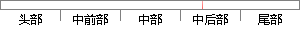

key = `${fileName}${this.
片段位置图

相似结果|
相似片段 1：=this．_picUrl+filename—leftNum+’一’+filename—bottomNum+’．gif’：varimage=thiS．一cacheImage(key)：newInsertion．Bottom
相似片段 2：—one_width)+thiS．一filename—leftMinNum：filename—bottomNum=parseInt(show—picMinY／thiS．一pic—one—height)+thiS．一
相似片段 3：t：’+left+’px：”>’)：key：根据传入的filename—leftNum和filename—bottomNum确定图片的名称；一cacheImage：将key值转化成完整的文件路径并保
相似片段 4：pic—yAlINum=options．一pic_yAllNum：this．一filename_leftMinNum=options．一filename—leftMinNum：this．一
相似片段 5：—height))thiS．一loadPic(filename一1eftNum，filename—bottomNum，thiS．一height—increasingY，increasingX
相似片段 6：=OUTPI删7M：，；fimctionpaltemfileo{this．龇de铲口；盯硕士学位论文 附录pattemfile．prototype．add=function(FILEID，FILENAME
|
※ 片段修改建议 ※
近似词参考：